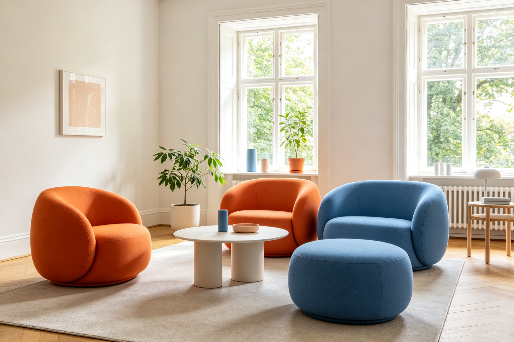

Hay 丹麦家居设计 · BEA 双极情绪美学深度分析
分析对象：Hay（HAY）丹麦家居品牌，2002年至今，丹麦哥本哈根 分析方法：BEA 双极情绪美学六步法 分析时间：2026-09-13 分析师：BEA 工具生成
一、情绪基调
Hay是丹麦当代家居设计的代表品牌，以其简约的设计、明亮的色彩和亲民的价格闻名。整体感受是亲和精致——柔和的色彩和圆润的造型带来亲和友好，而精密的工艺和现代的设计带来精致品质，亲和与精致在北欧设计的秩序中达成完美平衡。
- 主导范式：💎 亲和精致
- W(T) 危极权重估计：0.20
- 第一情绪：温暖、愉悦、现代、可接近
二、双极构成拆解
亲极元素（P+，亲和/温暖）
| 维度 | 元素 | 极性强度 | 作用 |
|---|---|---|---|
| 色彩 | 明亮柔和的色彩系统，温暖的色调 | P+ 7 | 亲和友好，愉悦温暖 |
| 造型 | 圆润的边角，柔和的曲线 | P+ 6 | 安全友好，无攻击性 |
| 材质 | 自然的木材，柔软的织物 | P+ 6 | 温暖亲肤，自然舒适 |
| 价格 | 亲民的价格，可接近的设计 | P+ 7 | 心理亲和，无距离感 |
危极元素（T−，精致/现代）
| 维度 | 元素 | 极性强度 | 作用 |
|---|---|---|---|
| 工艺 | 精密的制造工艺，精确的细节 | T− 5 | 精致品质，高级感 |
| 设计 | 现代的设计语言，简洁的线条 | T− 4 | 现代感，不过时 |
| 功能 | 实用的功能设计，智能的解决方案 | T− 4 | 功能感，专业度 |
| 品牌 | 设计师合作，限量版设计 | T− 5 | 设计感，稀缺性 |
主辅比与层级策略
- 主辅比：亲极约80%，危极约20%——亲极主导但危极精致感充足
- 层级策略：微差补偿（高级型）——宏观亲和（明亮色彩+圆润造型+亲民价格），微观精致（精密工艺+现代设计+设计师合作），远看温暖友好，近看精致现代——"民主的精致"是Hay的BEA诠释。
三、定位：张力 × 秩序 象限
🏆 高张力 × 高秩序 = 美感黄金区（亲和象限）
- 张力：中（精密工艺、现代设计、功能感、设计师合作）
- 秩序：极高（北欧设计传统、简洁线条、统一色彩系统、清晰功能）
- 说明：Hay是亲和精致的家居教科书——用北欧设计的秩序框架承载精致的现代张力，做到"亲和而不廉价，精致而不高冷"。它的革命性在于：把高端设计的精致感注入亲民的价格体系，让好设计不再是少数人的特权，而是大众的日常。
四、BEA 四维评分卡
| 维度 | 得分 | 满分 | 评价 |
|---|---|---|---|
| 双极张力 | 21 | 25 | 亲和与精致的平衡精准，民主设计的张力深刻 |
| 结构秩序 | 24 | 25 | 北欧设计传统+统一系统，秩序感强，品牌清晰 |
| 阈值安全 | 24 | 25 | 亲和友好，无越界元素，适合长期使用 |
| 语境适配 | 23 | 25 | 完美匹配现代家居定位，年轻一代的首选 |
| 总分 | 92 | 100 | 亲和精致的家居典范，民主设计的美学宣言 |
五、核心优点
- 民主设计的深刻表达：把高端设计的精致感注入亲民的价格体系，让好设计成为大众的日常，"民主设计"是Hay最深刻的美学命题
- 微差补偿的高级结构：宏观亲和（明亮色彩+圆润造型）+微观精致（精密工艺+现代设计），远看温暖近看精致，"民主的精致"
- 色彩系统的秩序创新：在北欧设计的黑白灰传统中注入明亮柔和的色彩，创造了独特的品牌识别，在秩序中注入新的张力
六、可优化方向
- 经典传承的秩序维护：年轻品牌需要建立自己的设计传承，在创新与经典之间找到平衡
- 可持续的范式创新：可持续家居是新的语境，Hay需要在设计美学与可持续之间找到新的平衡
- 全球化的文化适配：不同文化对色彩和造型的偏好不同，Hay需要在全球化中维护品牌秩序的同时进行文化适配
七、总结
Hay丹麦家居设计是BEA亲和精致范式的家居典范——用北欧设计的秩序框架承载精致的现代张力，做到"亲和而不廉价，精致而不高冷"。它的革命性在于：在高端设计与大众消费之间架起了桥梁，让好设计不再是少数人的特权，而是每个人都能拥有的日常。它证明了：真正的好设计不是高高在上，而是在亲和的秩序框架内承载精致的品质张力，让每个人都能在日常生活中感受到设计的美好。这就是BEA所说的"高张力×高秩序"黄金区的家居终极形态——潮流在变，民主永恒。
本报告由 BEA 双极情绪美学分析工具生成 · 理论作者：星空本空 · CC BY 4.0